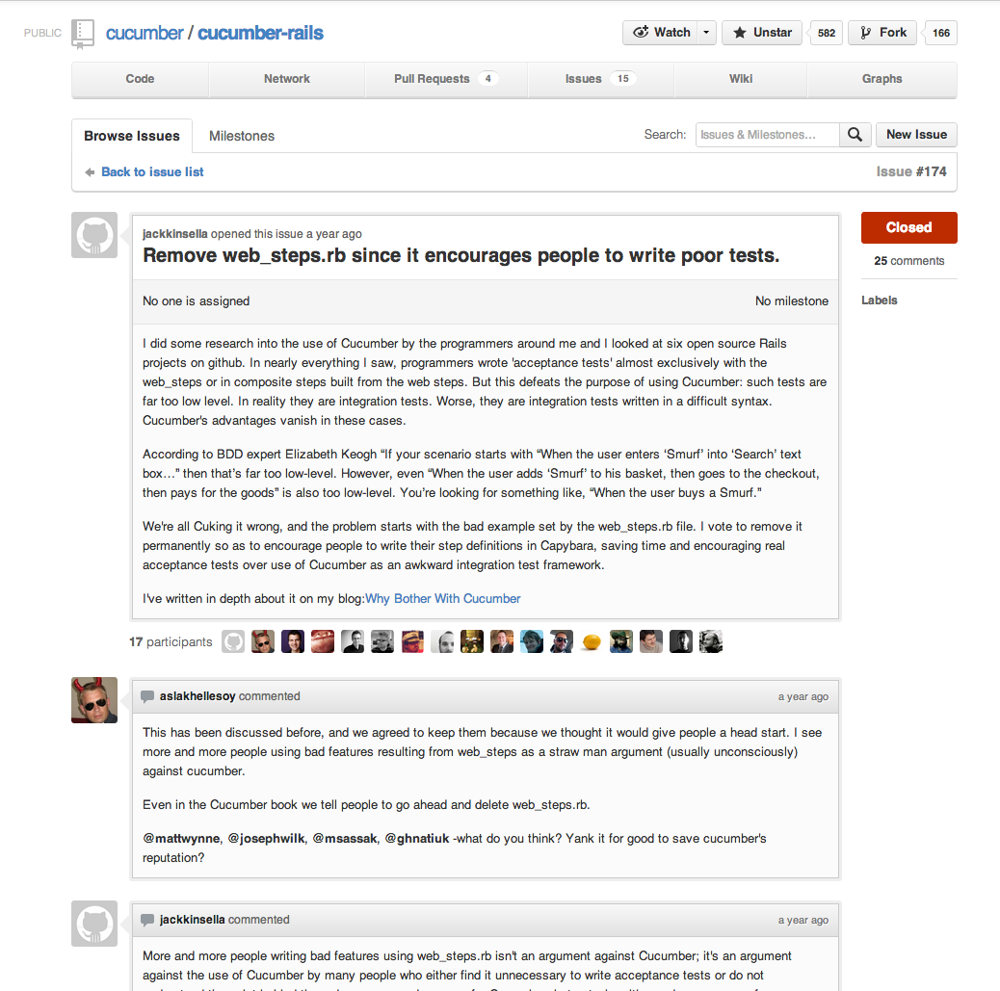

Declarative Cucumber
Neat ways to use our favourite behavior driven development tool
by @mariovisic
Behavior Driven Development? (BDD)
- 1) Failing acceptance test (Given I am a Visitor; Then I can view the homepage)
- 2) Create a Failing unit test and make it pass
- 3) Repeat steps 2 a few times
- 3) Passing acceptance test
Why shouldn't you use cucumber?
- Another DSL to learn
- Capyabara + RSpec (insert other tool) is good enough
- No one to read or write the steps (No tickets? Cards? Really?)
- The cucumber steps have to be written differently to what the stakeholders give us! <== Can fix this
Why Use Cucumber?
- Promotes Behavior Driven Development (BDD)
- Encourages minimal implementations
- Written in a language stake holders can read and write
- Side effects may include accidental integration testing
Installing Cucumber

# In your Gemfile:
gem 'cucumber-rails' # For rails projects
gem 'cucumber' # Otherwise
# Install the the cucumber gem
bundle install
# Install cucumber in your rails app
# (cucumber-rails only)
rails g cucumber:install
# Setup the test database
rake db:test:prepare
# To run the test suite
cucumber"Cucumber is hard, let's make it easier!"
- Learning all this is hard, a new DSL, BDD, all these steps
- web_steps.rb were added to make it easier
- But they just made everyone write their features badly
- Now no longer generated (old projects might still have it)

Examples
- Starting with what you should avoid doing
Imperative
Imperative means that you write each step that needs to be taken to complete the outcome, for example:
"Fill in the email form input"
- "Press the button submit button"
# features/user/authentication.feature
Feature: Authentication (Imperative)
As A User
In order to gain access to skynet
I want to be able to login and logout
Background:
Given the following user exists:
| email | password |
| z@b.com | giraffes |
# features/user/authentication.feature
Scenario: Logging in
Given I am on the login page
When I fill in "Email" with "z@b.com"
And I fill in "Password" with "giraffes"
And I press "Sign in"
Then I should see "Signed in"Problems with imperative steps
- It doesn't read well in English (too long)
- It's hard to use it for BDD (Need to know how all of the UI works beforehand)
- Clients couldn't write scenarios without a developers help
- If we can't read it then why not just use capybara directly? It's going to be much easier than learning cucumber
Surely we can reduce some of these steps?
- Also why is the users email and password important? Surely I shouldn't have to write that?
# features/user/authentication.feature
Feature: Authentication (Imperative with Shortcuts)
As A User
In order to gain access to skynet
I want to be able to login and logout
Scenario: Logging in
Given I have a valid account
And I am on the login page
When I fill in my user details
And I press "Sign in"
Then I should see "Signed in"# features/step_definitions/authentication.rb
Given /^I have a valid account$/ do
@current_email = 'my@email.com'
@current_password = 'candles'
@current_user = FactoryGirl.create(:user,
:email => @current_email,
:password => @current_password)
end# Please do not do this. More on this later.
When /^I fill in my user details$/ do
step %{I fill in "Email" with "#{@current_email}"}
step %{I fill in "Password" with "#{@current_password}"}
endProblems with keeping imperative style
- Steps are easier to read but still do not match a story we would define for a feature
Delclarative Steps
Declarative means that you write the outcome for the scenario, which is how we write our user stories and how a client thinks of the parts of their project.
An example would be "Given a user has an account, they should be able to login"
The individual steps are not as important.
# features/user/authentication.feature
Feature: Authentication (No Web Steps, Declarative)
As A User
In order to gain access to skynet
I want to be able to login and logout
Scenario: Logging in
Given I have a valid account
Then I should be able to login# features/step_definitions/authentication.rb
Then /^I should be able to login$/ do
visit new_user_session_path
fill_in_my_details
click_button 'Sign in'
page.should have_content 'Signed in'
endWhere do we put the fill_in_my_details method?
# features/support/helpers/authentication_helper.rb
module AuthenticationHelper
def fill_in_my_details
fill_in 'Email', :with => @current_email
fill_in 'Password', :with => @current_password
end
end
World(AuthenticationHelper)Why is Declarative better?
- It's easy for clients and developers to read
- Scenarios can match actual user stories
- Feature files only need altering if the user stories change.
These slides are online at: http://mariovisic.github.com/declarative_cucumber/
All code snippets are working examples from:
https://github.com/mariovisic/declarative_cucumber